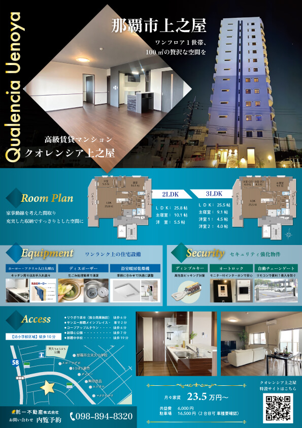
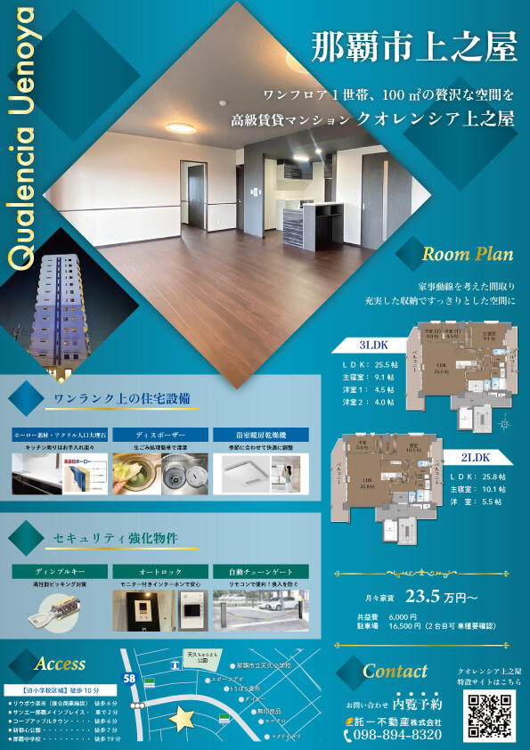
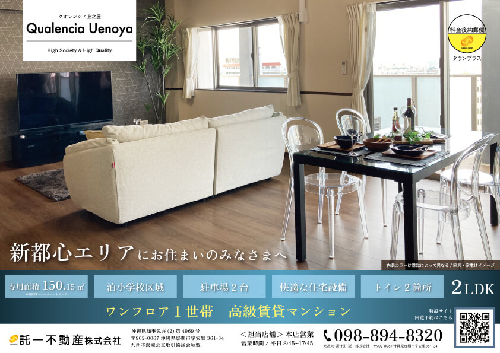
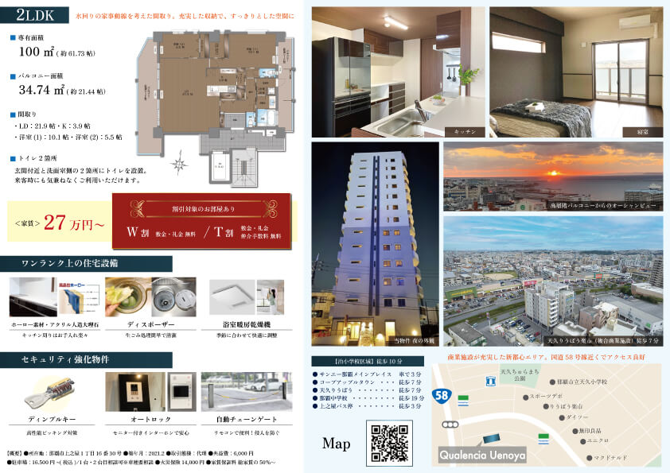

サイズ： A4
ポップなイメージでわかりやすく
高級感を演出するために、バックに青のグラデーションにしました。
ダイヤのあしらいで統一することで、高級感を出しつつ、分散しすぎないデザインにしました。
1枚目のトップにある画像は、夜間に撮った外観で、左半分はPhotoshopの自動生成機能で横幅を追加しました。
また、そのまま貼り付けると不自然だったため、左側に黒のグラデーションを乗算で重ね、さらに上から内装写真を配置しました。
表面にあまり情報を載せず、アピールポイントだけブロックで配置することで、シンプルで洗礼されたデザインになるようにしました。
新都心に配布するタウンプラスで、ターゲットが確実に絞られていたため、「新都心エリアにお住まいの皆様へ」というフレーズを載せて、チラシを見た方が自分ごとだと捉えられるようにしました。
裏面に詳細を載せ、アピールできる情報を大きく表示し、その他を小さくすることで文字数を多く見せないように工夫しました。
割引の情報を記載している部分はチープに見えないように深い赤のグラデーションと明朝体を使用しました。
表面

裏面

裏面

裏面
